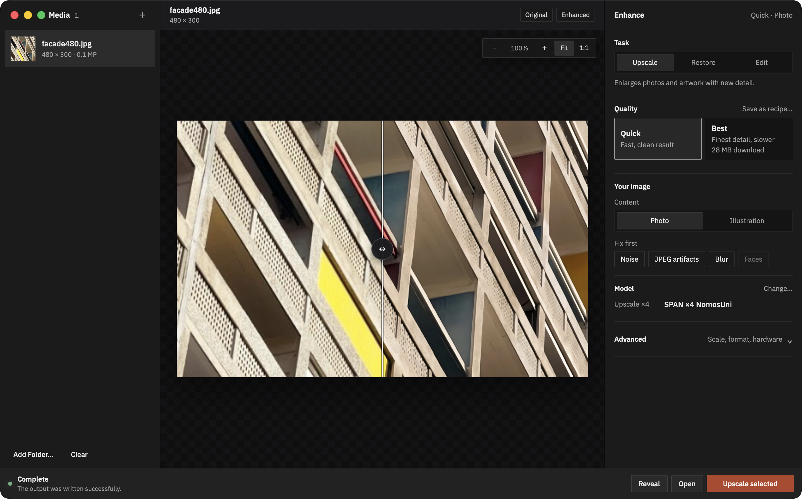

macOS
Apple Silicon · macOS 14+
v0.3.0-beta · Neural Engine · MPS · CPU fallback
Download .dmg · 419 MBLocalSR is a free desktop app for upscaling photos, cleaning up noise and blur, and enhancing video. The models run on your computer, and your photos stay there too.
For macOS, Windows and Linux. Version v0.3.0-beta.
The original is enlarged by your browser; the result is shown at its real size. Nothing is sharpened afterwards. How these examples were made
A photo, a scan, an illustration or a video. One file or a whole folder.
Quick is a good start. Best spends more time on photo detail. Fix noise, blur or JPEG artifacts first if the photo needs it.
Compare with a slider, or hold M to see the original. The result is a new file; your original stays as it was.

Every model runs on your computer. Each one shows its size, licence and source before it downloads.
Enlarge photos and artwork by 2×, 3× or 4×. Quick is a good start, and Best spends more time on photo detail. Which model for which photo
Clean up noise, blur and JPEG artifacts first, then enlarge. Or keep the size and only repair. LocalSR vs Upscayl
Enhance video frame by frame, with the source timing, rotation and audio kept. Fine detail can flicker, and long clips take hours. About video
Describe the change, and FLUX.2 klein or Qwen Image Edit makes a new image. The original stays as it was. About editing
Process a whole folder or a queue, and save a setup as a recipe. Opens JPEG, PNG, WebP, TIFF, AVIF and camera RAW, and HEIC on a Mac.
Load a model file you trust, for example from OpenModelDB, in the model library. All built-in models
The butterfly above was upscaled twice in October: once as usual, once with all network access denied. Both runs wrote the same file.
| Run | Network | Time | SHA-256 of the result |
|---|---|---|---|
| First run | Allowed | 9.2 s | 29e18560…70512008 |
| Second run | All access denied | 10.0 s | 29e18560…70512008 |
What does leave. Models download once, from their pinned source, when a task first needs them. The Mac app checks for updates at launch and sends an anonymous count with that check: app version, platform and channel, no identifiers. You can turn it off. Privacy
“The results are impressive, but they are not my work. My work is making these niche but incredible models a lot more accessible.”
The app shows each licence before it downloads anything.
| Model | For | By | Licence | Download |
|---|---|---|---|---|
| SPAN ×4 NomosUni | Quick upscale | Philip Hofmann | CC BY 4.0 | 4.5 MB |
| RealPLKSR ×4 NomosWebPhoto | Best upscale | Philip Hofmann | CC BY 4.0 | 28 MB |
| Real-ESRGAN ×4 | Upscale | Xintao Wang et al. | BSD-3-Clause | 67 MB |
| HAT-L ×4 | Slow, careful upscale | XPixel Group | Apache-2.0 | 166 MB |
| SCUNet Color | Noise | Kai Zhang et al. | Apache-2.0 | 72 MB |
| NAFNet GoPro | Motion blur | Liangyu Chen et al. | MIT | 272 MB |
| FBCNN Color | JPEG artifacts | Jiaxi Jiang et al. | Apache-2.0 | 288 MB |
More in the model guide, and which one to pick for which kind of damage in which model for which photo.
LocalSR started out of necessity. For a long time I upscaled pictures with the HAT-L models, but only through the terminal. At some point I wanted a proper app for it, and most of what I found was subscription-based, really complicated or outdated. So the decision was clear.
v0.3.0-beta. Released . Release notes
Apple Silicon · macOS 14+
v0.3.0-beta · Neural Engine · MPS · CPU fallback
Download .dmg · 419 MBWindows 10 / 11 · x86-64
v0.3.0-beta · CPU backend · unsigned installer
Download .exe · 179 MBLinux · x86-64 · glibc 2.39+ (Ubuntu 24.04+)
v0.3.0-beta · CPU backend · AppImage
Download .AppImage · 631 MBOpen the DMG and drag LocalSR onto the Applications folder. It updates itself.
The installer is not code-signed yet, so SmartScreen warns first: choose More info, then Run anyway.
Make the AppImage executable with chmod +x, then run it.
brew install --cask herrei/tap/localsr
Results are saved as new files, so your originals stay untouched.
Yes. LocalSR is open source under the MIT license, with nothing to buy or sign up for. The models you download keep their own licenses; the model guide lists them.
On a Mac, yes: the Neural Engine and the Apple Silicon GPU, with a CPU fallback. On Windows and Linux the standard download runs on the CPU. GPU editions exist for AMD (ROCm on Linux, tested on a Radeon RX 9060 XT), NVIDIA (CUDA on Windows and Linux) and any DirectX 12 card (DirectML on Windows).
Features can still change. The Mac build is signed, notarized and tells you when a newer beta is available. The Windows and Linux packages pass the same automated checks but have not had the manual testing the Mac build gets, and they do not update themselves yet. Keep your originals.
Super-resolution estimates plausible detail from an image. It cannot guarantee the recovery of information that was lost, and results vary by source and model. Inspect small text, faces and fine patterns carefully.
Most models download separately, when you first choose them. LocalSR checks every download against its expected size and SHA-256 checksum.